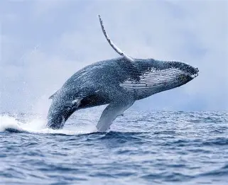

Whales
Whales are large, intelligent sea mammals that live in oceans around the world. They breathe air through lungs, give birth to live babies, and feed them with milk. Some whales have baleen to filter tiny food like krill, while others have teeth to catch fish. The blue whale is the biggest animal on Earth. Whales often travel in groups
and use sounds to talk to each other.

Fun facts
Whales breathe air, not water.
Blue whales are the biggest animals ever.
Humpback whales sing songs underwater.
Orcas (killer whales) are actually dolphins.
Whales sleep with one half of their brain awake.